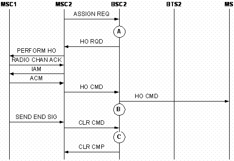

Overview
The Outgoing Inter-RAT Inter-Cell Handover (TDD) per Cell is classified into Outgoing Inter-RAT Inter-Cell Handover (TDD) (Excluding Directed Retry) and Outgoing Inter-RAT Inter-Cell Handover (TDD) (Directed Retry).
The following is the block diagram that shows the measurement points of the counters related to outgoing inter-RAT inter-cell handover (TDD).

Table 2 describes the measurement points shown in Figure2.
| Measurement points | Description |
|---|---|
| A | Measurement point of Outgoing Inter-RAT Inter-Cell Handover Requests (Excluding Directed Retry) (TDD) |
| B | Measurement point of Outgoing Inter-RAT Inter-Cell Handover Responses (Excluding Directed Retry) (TDD) |
| C | Measurement point of Successful Outgoing Inter-RAT Inter-Cell Handovers (Excluding Directed Retry) (TDD) |
Outgoing inter-RAT inter-cell handover (TDD) (excluding directed retry)
After receiving measurement reports from the MS, the BSC that controls the originating cell (hereinafter referred to as BSC2) decides whether a handover is required according to the handover algorithm based on the load and signal interference in the serving cell, and the signal quality and receive/transmit level in the measurement report. If a handover is required based on the handover algorithm, a handover triggering indication is sent to the service process handling module to notify the module to initiate the handover procedure. If the target cell of the handover is a TD-SCDMA (hereinafter TD for short) cell, the outgoing inter-RAT inter-cell handover (TDD) is initiated.
BSC2 sends an HO RQD message to the corresponding MSC (hereinafter referred to as MSC2), indicating MSC2 to notify the TD system of the handover initiation. According to its own data configurations, MSC2 finds MSC1 in the TD system and sends a handover request to MSC1. After the TD system is ready for receiving the request, MSC2 is informed of the readiness. Then, MSC2 sends an HO CMD message to BSC2, indicating BSC2 to notify the MS of the handover initiation. Through the originating cell, BSC2 sends an HO CMD message to the MS, indicating the MS to access the target cell. After the MS accesses the target cell normally, MSC1 informs MSC2 that the inter-RAT outgoing cell handover is complete. Then, MSC2 sends a CLEAR CMD message to BSC2. After releasing the resources in the originating cell, BSC2 responds to MSC2 with a CLR CMP message. The outgoing inter-RAT inter-cell handover (TDD) is completed.
Figure 2 shows the measurement of the counters related to outgoing inter-RAT inter-cell handover (excluding directed retry) (TDD).

Table 3 describes the measurement points shown in Figure3.
| Measurement points | Description |
|---|---|
| A | Measurement point of Outgoing Inter-RAT Inter-Cell Handover Requests (Directed Retry) (TDD) |
| B | Measurement point of Outgoing Inter-RAT Inter-Cell Handover Responses (Directed Retry) (TDD) |
| C | Measurement point of Successful Outgoing Inter-RAT Inter-Cell Handovers (Directed Retry) (TDD) |
Outgoing inter-RAT inter-cell handover (TDD) (directed retry)
When the MS initiates a call, BSC2 (where the MS belongs) determines the assignment procedure based on the load in the serving cell if BSC2 receives an ASSIGN REQ message from MSC2 (where the BSC2 belongs). Generally, there are three assignment procedures: normal assignment, directed retry, and mode modification. If the load of the cell is so high that the cell cannot admit a new service or that a new admitted service will affect the current services, BSC2 decides to perform a directed retry. If the target cell selected during the directed retry belongs to the TD system, BSC2 initiates an outgoing inter-RAT inter-cell handover procedure in the originating cell.
After that, BSC2 sends an HO RQD message to MSC2, indicating MSC2 to notify the TD system of the handover initiation. Based on its data configuration, MSC2 finds MSC1 in the TD system and sends a handover request to MSC1. When the TD system is ready for receiving the handover request, it informs MSC2. Then, MSC2 sends an HO CMD message to BSC2, indicating BSC2 to notify the MS of the handover initiation. BSC2 sends an HO CMD message to the MS in the originating cell, requesting the MS to access the target cell. When the MS accesses the target cell successfully, MSC1 notifies MSC2 of the completion of incoming inter-RAT inter-cell handover (TDD). Then, MSC2 sends a CLEAR CMD message to BSC2. After releasing the resources in the originating cell, BSC2 returns a CLR CMP message to MSC2. Thus, the outgoing inter-RAT inter-cell handover (TDD) in the directed retry procedure is completed.
Figure 3 shows the measurement of the counters related to outgoing inter-RAT inter-cell handover (directed retry) (TDD).
Measurement Counters
| ID | Counter | Description | Original Release |
|---|---|---|---|
| 1278092417 | CELL.INTERRAN.TDD.OUTCELL.HO.REQ.NOT.INCLUDE.DR.SD | H35001:Outgoing Inter-RAT Inter-Cell Handover Requests (SDCCH) (Excluding Directed Retry) (TDD) | Earlier than V900R011 |
| 1278092418 | CELL.INTERRAN.TDD.OUTCELL.HO.REQ.TCHF | H35071:Outgoing Inter-RAT Inter-Cell Handover Requests (TCHF) (TDD) | Earlier than V900R011 |
| 1278092419 | CELL.INTERRAN.TDD.OUTCELL.HO.REQ.TCHH | H35081:Outgoing Inter-RAT Inter-Cell Handover Requests (TCHH) (TDD) | Earlier than V900R011 |
| 1278092420 | CELL.INTERRAN.TDD.OUTCELL.HO.CMD.NOT.INCLUDE.DR.SD | H35101:Outgoing Inter-RAT Inter-Cell Handover Commands (SDCCH) (Excluding Directed Retry) (TDD) | Earlier than V900R011 |
| 1278092421 | CELL.INTERRAN.TDD.OUTCELL.HO.CMD.TCHF | H35171:Outgoing Inter-RAT Inter-Cell Handover Commands (TCHF) (TDD) | Earlier than V900R011 |
| 1278092422 | CELL.INTERRAN.TDD.OUTCELL.HO.CMD.TCHH | H35181:Outgoing Inter-RAT Inter-Cell Handover Commands (TCHH) (TDD) | Earlier than V900R011 |
| 1278092423 | CELL.INTERRAN.TDD.OUTCELL.HO.FAIL.NOT.INCLUDE.DR.SD | H35201:Failed Outgoing Inter-RAT Inter-Cell Handovers (SDCCH) (Excluding Directed Retry) (TDD) | Earlier than V900R011 |
| 1278092424 | CELL.INTERRAN.TDD.OUTCELL.HO.FAIL.TCHF | H35271:Failed Outgoing Inter-RAT Inter-Cell Handovers (TCHF) (TDD) | Earlier than V900R011 |
| 1278092425 | CELL.INTERRAN.TDD.OUTCELL.HO.FAIL.TCHH | H35281:Failed Outgoing Inter-RAT Inter-Cell Handovers (TCHH) (TDD) | Earlier than V900R011 |
| 1278092426 | CELL.INTERRAN.TDD.OUTCELL.HO.FAIL.MS.RPT.ABNORM.REL.UNS | H352Da1:Failed Outgoing Inter-RAT Inter-Cell Handovers (Reconnection to Old Channels) (Abnormal Release, Unspecified) (TDD) | Earlier than V900R011 |
| 1278092427 | CELL.INTERRAN.TDD.OUTCELL.HO.FAIL.MS.RPT.ABNORM.REL.CHN | H352Db1:Failed Outgoing Inter-RAT Inter-Cell Handovers (Reconnection to Old Channels) (Abnormal Release, Channel Unacceptable) (TDD) | Earlier than V900R011 |
| 1278092428 | CELL.INTERRAN.TDD.OUTCELL.HO.FAIL.MS.RPT.ABNORM.REL.T.E | H352Dc1:Failed Outgoing Inter-RAT Inter-Cell Handovers (Reconnection to Old Channels) (Abnormal Release, Timer Expired) (TDD) | Earlier than V900R011 |
| 1278092429 | CELL.INTERRAN.TDD.OUTCELL.HO.FAIL.MS.RPT.ABNORM.REL.NO.ACT | H352Dd1:Failed Outgoing Inter-RAT Inter-Cell Handovers (Reconnection to Old Channels) (Abnormal Release, No Activity on the Radio Path) (TDD) | Earlier than V900R011 |
| 1278092430 | CELL.INTERRAN.TDD.OUTCELL.HO.FAIL.MS.RPT.PREEMPT.RLS | H352De1:Failed Outgoing Inter-RAT Inter-Cell Handovers (Reconnection to Old Channels) (Preemptive Release) (TDD) | Earlier than V900R011 |
| 1278092431 | CELL.INTERRAN.TDD.OUTCELL.HO.FAIL.MS.RPT.HO.TA | H352Df1:Failed Outgoing Inter-RAT Inter-Cell Handovers (Reconnection to Old Channels) (Handover Failed, Timing Advance out of Range) (TDD) | Earlier than V900R011 |
| 1278092432 | CELL.INTERRAN.TDD.OUTCELL.HO.FAIL.MS.RPT.NO.CH.MODE | H352Dg1:Failed Outgoing Inter-RAT Inter-Cell Handovers (Reconnection to Old Channels) (Channel Mode Unavailable) (TDD) | Earlier than V900R011 |
| 1278092433 | CELL.INTERRAN.TDD.OUTCELL.HO.FAIL.MS.RPT.FREQ | H352Dh1:Failed Outgoing Inter-RAT Inter-Cell Handovers (Reconnection to Old Channels) (Frequency Unavailable) (TDD) | Earlier than V900R011 |
| 1278092434 | CELL.INTERRAN.TDD.OUTCELL.HO.FAIL.MS.RPT.CALL.CLR | H352Di1:Failed Outgoing Inter-RAT Inter-Cell Handovers (Reconnection to Old Channels) (Call Already Cleared) (TDD) | Earlier than V900R011 |
| 1278092435 | CELL.INTERRAN.TDD.OUTCELL.HO.FAIL.MS.RPT.SEMANT | H352Dj1:Failed Outgoing Inter-RAT Inter-Cell Handovers (Reconnection to Old Channels) (Semantically Incorrect Message) (TDD) | Earlier than V900R011 |
| 1278092436 | CELL.INTERRAN.TDD.OUTCELL.HO.FAIL.MS.RPT.INV.MAN | H352Dk1:Failed Outgoing Inter-RAT Inter-Cell Handovers (Reconnection to Old Channels) (Invalid Mandatory Information) (TDD) | Earlier than V900R011 |
| 1278092437 | CELL.INTERRAN.TDD.OUTCELL.HO.FAIL.MS.RPT.MSG.TYPE.NEXISTENT | H352Dl1:Failed Outgoing Inter-RAT Inter-Cell Handovers (Reconnection to Old Channels) (Message Type Non-existent or Not Implemented) (TDD) | Earlier than V900R011 |
| 1278092438 | CELL.INTERRAN.TDD.OUTCELL.HO.FAIL.MS.RPT.MSG.TYPE.NOT.COMPATIBLE | H352Dm1:Failed Outgoing Inter-RAT Inter-Cell Handovers (Reconnection to Old Channels) (Message Type Not Compatible with Protocol State) (TDD) | Earlier than V900R011 |
| 1278092439 | CELL.INTERRAN.TDD.OUTCELL.HO.FAIL.MS.RPT.CONDITION.IE.ERR | H352Dn1:Failed Outgoing Inter-RAT Inter-Cell Handovers (Reconnection to Old Channels) (Conditional IE Error) (TDD) | Earlier than V900R011 |
| 1278092440 | CELL.INTERRAN.TDD.OUTCELL.HO.FAIL.MS.RPT.NO.CA | H352Do1:Failed Outgoing Inter-RAT Inter-Cell Handovers (Reconnection to Old Channels) (No Cell Allocation Available) (TDD) | Earlier than V900R011 |
| 1278092441 | CELL.INTERRAN.TDD.OUTCELL.HO.FAIL.MS.RPT.PROTOCL | H352Dp1:Failed Outgoing Inter-RAT Inter-Cell Handovers (Reconnection to Old Channels) (Protocol Error Unspecified) (TDD) | Earlier than V900R011 |
| 1278092442 | CELL.INTERRAN.TDD.OUTCELL.HO.FAIL.MS.RPT.OTHER | H352Dq1:Failed Outgoing Inter-RAT Inter-Cell Handovers (Reconnection to Old Channels) (Other Causes) (TDD) | Earlier than V900R011 |
| 1278092443 | CELL.INTERRAN.TDD.OUTCELL.HO.FAIL.HO.REJ.OM.INTERVENTION | H352Ka1:Failed Outgoing Inter-RAT Inter-Cell Handovers (Handover Request Rejected) (OM Intervention) (TDD) | Earlier than V900R011 |
| 1278092444 | CELL.INTERRAN.TDD.OUTCELL.HO.FAIL.HO.REJ.EQUIP.FAIL | H352Kb1:Failed Outgoing Inter-RAT Inter-Cell Handovers (Handover Request Rejected) (Equipment Failure) (TDD) | Earlier than V900R011 |
| 1278092445 | CELL.INTERRAN.TDD.OUTCELL.HO.FAIL.HO.REJ.NO.RADIO.RES | H352Kc1:Failed Outgoing Inter-RAT Inter-Cell Handovers (Handover Request Rejected) (No Radio Resource Available) (TDD) | Earlier than V900R011 |
| 1278092446 | CELL.INTERRAN.TDD.OUTCELL.HO.FAIL.HO.REJ.REQ.NO.TER.RES | H352Kd1:Failed Outgoing Inter-RAT Inter-Cell Handovers (Handover Request Rejected) (Requested Terrestrial Resource Unavailable) (TDD) | Earlier than V900R011 |
| 1278092447 | CELL.INTERRAN.TDD.OUTCELL.HO.FAIL.HO.REJ.BSS.NOT.EQUIP | H352Ke1:Failed Outgoing Inter-RAT Inter-Cell Handovers (Handover Request Rejected) (BSS not Equipped) (TDD) | Earlier than V900R011 |
| 1278092448 | CELL.INTERRAN.TDD.OUTCELL.HO.FAIL.HO.REJ.INVAILD.CELL | H352Kf1:Failed Outgoing Inter-RAT Inter-Cell Handovers (Handover Request Rejected) (Invalid Cell) (TDD) | Earlier than V900R011 |
| 1278092449 | CELL.INTERRAN.TDD.OUTCELL.HO.FAIL.HO.REJ.REQ.TRANSC.UNAIVL | H352Kg1:Failed Outgoing Inter-RAT Inter-Cell Handovers (Handover Request Rejected) (Requested Transcoding/Rate Adaption Unavailable) (TDD) | Earlier than V900R011 |
| 1278092450 | CELL.INTERRAN.TDD.OUTCELL.HO.FAIL.HO.REJ.CIR.POOL.MISMATCH | H352Kh1:Failed Outgoing Inter-RAT Inter-Cell Handovers (Handover Request Rejected) (Circuit Pool Mismatch) (TDD) | Earlier than V900R011 |
| 1278092451 | CELL.INTERRAN.TDD.OUTCELL.HO.FAIL.HO.REJ.REQ.NO.SV | H352Ki1:Failed Outgoing Inter-RAT Inter-Cell Handovers (Handover Request Rejected) (Requested Speech Version Unavailable) (TDD) | Earlier than V900R011 |
| 1278092452 | CELL.INTERRAN.TDD.OUTCELL.HO.FAIL.HO.REJ.CIPH.ALG.NOT.SUPT | H352Kj1:Failed Outgoing Inter-RAT Inter-Cell Handovers (Handover Request Rejected) (Ciphering Algorithm not Supported) (TDD) | Earlier than V900R011 |
| 1278092453 | CELL.INTERRAN.TDD.OUTCELL.HO.FAIL.HO.REJ.TER.CIR.ALRDY.ALLOC | H352Kk1:Failed Outgoing Inter-RAT Inter-Cell Handovers (Handover Request Rejected) (Terrestrial circuit already allocated) (TDD) | Earlier than V900R011 |
| 1278092454 | CELL.INTERRAN.TDD.OUTCELL.HO.FAIL.HO.REJ.INVAILD.MSG | H352Kl1:Failed Outgoing Inter-RAT Inter-Cell Handovers (Handover Request Rejected) (Invalid Message) (TDD) | Earlier than V900R011 |
| 1278092455 | CELL.INTERRAN.TDD.OUTCELL.HO.FAIL.HO.REJ.PROTOCOL.ERR | H352Km1:Failed Outgoing Inter-RAT Inter-Cell Handovers (Handover Request Rejected) (Protocol Error between BSS and MSC) (TDD) | Earlier than V900R011 |
| 1278092456 | CELL.INTERRAN.TDD.OUTCELL.HO.FAIL.HO.REJ.OTHER | H352Kn1:Failed Outgoing Inter-RAT Inter-Cell Handovers (Handover Request Rejected) (Other Causes) (TDD) | Earlier than V900R011 |
| 1278092457 | CELL.INTERRAN.TDD.OUTCELL.HO.FAIL.CLR.CMD.RADIO.INTF.MSG.FAIL | H352Ha1:Failed Outgoing Inter-RAT Inter-Cell Handovers (Clear Commands Sent By MSC) (Radio Interface Message Failure) (TDD) | Earlier than V900R011 |
| 1278092458 | CELL.INTERRAN.TDD.OUTCELL.HO.FAIL.CLR.CMD.RADIO.INTF.FAIL | H352Hb1:Failed Outgoing Inter-RAT Inter-Cell Handovers (Clear Commands Sent By MSC) (Radio Interface Failure) (TDD) | Earlier than V900R011 |
| 1278092459 | CELL.INTERRAN.TDD.OUTCELL.HO.FAIL.CLR.CMD.OM.INTERVENTION | H352Hc1:Failed Outgoing Inter-RAT Inter-Cell Handovers (Clear Commands Sent By MSC) (OM Intervention) (TDD) | Earlier than V900R011 |
| 1278092460 | CELL.INTERRAN.TDD.OUTCELL.HO.FAIL.CLR.CMD.EQUIP.FAIL | H352Hd1:Failed Outgoing Inter-RAT Inter-Cell Handovers (Clear Commands Sent By MSC) (Equipment Failure) (TDD) | Earlier than V900R011 |
| 1278092461 | CELL.INTERRAN.TDD.OUTCELL.HO.FAIL.CLR.CMD.PREEMPTION | H352He1:Failed Outgoing Inter-RAT Inter-Cell Handovers (Clear Commands Sent By MSC) (Preemption) (TDD) | Earlier than V900R011 |
| 1278092462 | CELL.INTERRAN.TDD.OUTCELL.HO.FAIL.CLR.CMD.INVALID.MSG | H352Hf1:Failed Outgoing Inter-RAT Inter-Cell Handovers (Clear Commands Sent By MSC) (Invalid Message) (TDD) | Earlier than V900R011 |
| 1278092463 | CELL.INTERRAN.TDD.OUTCELL.HO.FAIL.CLR.CMD.PROTOCOL.ERR | H352Hg1:Failed Outgoing Inter-RAT Inter-Cell Handovers (Clear Commands Sent By MSC) (Protocol Error between BSS and MSC) (TDD) | Earlier than V900R011 |
| 1278092464 | CELL.INTERRAN.TDD.OUTCELL.HO.FAIL.CLR.CMD.OTHER | H352Hh1:Failed Outgoing Inter-RAT Inter-Cell Handovers (Clear Commands Sent By MSC) (Other Causes) (TDD) | Earlier than V900R011 |
| 1278092465 | CELL.INTERRAN.TDD.OUTCELL.HO.FAIL.A.INTERF.FAIL | H352G1:Failed Outgoing Inter-RAT Inter-Cell Handovers (A Interface Failure) (TDD) | Earlier than V900R011 |
| 1278092466 | CELL.INTERRAN.TDD.OUTCELL.HO.FAIL.T7.EXP | H352L1:Failed Outgoing Inter-RAT Inter-Cell Handovers (T7 Expired) (TDD) | Earlier than V900R011 |
| 1278092467 | CELL.INTERRAN.TDD.OUTCELL.HO.FAIL.T8.EXP | H352C1:Failed Outgoing Inter-RAT Inter-Cell Handovers (T8 Expired) (TDD) | Earlier than V900R011 |
| 1278092468 | CELL.INTERRAN.TDD.OUTCELL.HO.REQ | CH3501:Outgoing Inter-RAT Inter-Cell Handover Requests (TDD) | Earlier than V900R011 |
| 1278092469 | CELL.INTERRAN.TDD.OUTCELL.HO.SUCC | CH3531:Successful Outgoing Inter-RAT Inter-Cell Handovers (TDD) | Earlier than V900R011 |
| 1278092470 | CELL.INTERRAN.TDD.OUTCELL.HO.SUCC.RATE | TH3531:Success Rate of Outgoing Inter-RAT Inter-Cell Handover (TDD) | Earlier than V900R011 |
| 1278092471 | CELL.INTERRAN.TDD.OUTCELL.HO.CMD | CH3511:Outgoing Inter-RAT Inter-Cell Handover Commands (TDD) | Earlier than V900R011 |
| 1278092472 | CELL.INTERRAN.TDD.OUTCELL.HO.FAIL | CH3521:Failed Outgoing Inter-RAT Inter-Cell Handovers (TDD) | Earlier than V900R011 |
| 1278092473 | CELL.INTERRAN.TDD.OUTCELL.HO.FAIL.RECONN.SUCC | CH352D1:Failed Outgoing Inter-RAT Inter-Cell Handovers (Reconnection to Old Channels) (TDD) | Earlier than V900R011 |
| 1278092474 | CELL.INTERRAN.TDD.OUTCELL.HO.FAIL.REQ.REJ | CH352K1:Failed Outgoing Inter-RAT Inter-Cell Handovers (Handover Request Rejected) (TDD) | Earlier than V900R011 |
| 1278092475 | CELL.INTERRAN.TDD.OUTCELL.HO.FAIL.MSC.CLR | CH352H1:Failed Outgoing Inter-RAT Inter-Cell Handovers (Clear Commands Sent By MSC) (TDD) | Earlier than V900R011 |
| 1278092478 | CELL.INTERRAN.TDD.OUTCELL.HO.REQ.DR.SD | H35001A:Outgoing Inter-RAT Inter-Cell Handover Requests (SDCCH) (Directed Retry) (TDD) | Earlier than V900R011 |
| 1278092479 | CELL.INTERRAN.TDD.OUTCELL.HO.CMD.DR.SD | H35101A:Outgoing Inter-RAT Inter-Cell Handover Commands (SDCCH) (Directed Retry) (TDD) | Earlier than V900R011 |
| 1278092480 | CELL.INTERRAN.TDD.OUTCELL.HO.FAIL.DR.SD | H35201A:Failed Outgoing Inter-RAT Inter-Cell Handovers (SDCCH) (Directed Retry) (TDD) | Earlier than V900R011 |
| 1278092477 | CELL.SUPPORT.FDD.MS.NUM | CH354A:Number Of MS support FDD | Earlier than V900R011 |
| 1278092476 | CELL.SUPPORT.TDD.MS.NUM | CH355A:Number Of MS support TDD | Earlier than V900R011 |
Counter Relationship
None